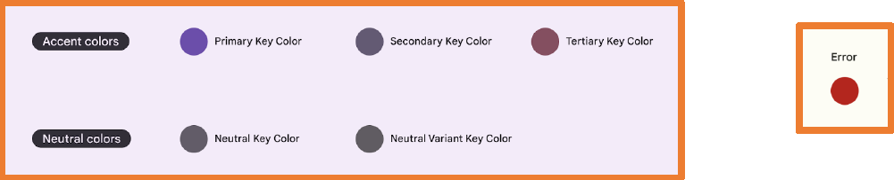
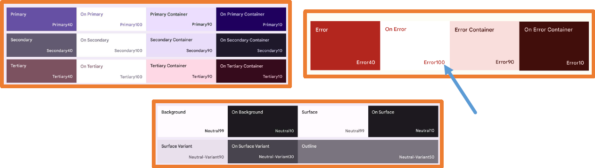
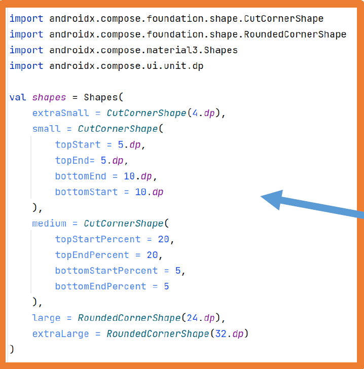

Con la programación tradicional de Android (Views) cada pantalla de la aplicación se implementaba en una
Activity diferente.
Esto obligaba a utilizar grafos de navegación, instrucciones para iniciar Activities,
crear elementos para poder mandar información a la ventana nueva y para poder recibir información cuando se cierre la ventana.
Con Jetpack Compose se ha simplificado toda la navegación debido a que la estructura de una aplicación
desarrollada con Jetpack Compose se basa en Single Activity.
Single Activity consiste en una única Activity que gestiona todos los elementos de la interfaz,
los cuales se dividen en diferentes componentes propios de Jetpack Compose
A partir de este momento es muy importante tener organizados en carpetas todos los componentes de la aplicación.
Para ello se puede crear un paquete llamado screens dentro de ui
donde ir creando los diferentes componentes de cada una de las pantallas.
Dentro del paquete screens se pueden ubicar directamente los archivos .kt
de cada pantalla o incluso se pueden crear diferentes paquetes nuevos si cada pantalla hace uso de varios archivos .kt
El ejemplo que se va a estudiar consiste en una aplicación con dos pantallas.
La primera pantalla mostrará un TextField para introducir el nombre
y un botón para navegar a la segunda pantalla enviándole el nombre .
La segunda pantalla mostrará el nombre recibido y mostrará un botón para volver
Para implementar la navegación con Jetpack Compose se debe añadir la siguiente dependencia en build.gradle.kts (Module)
y sincronizar .
La navegación con Jetpack Compose necesita dos elementos:
NavController: se encarga de controlar la navegación.
NavHost: se encarga de mostrar cada una de las pantallas a las que se navega.
El elemento NavHost define las diferentes pantallas a las que se puede navegar
y además necesita al NavController
El primer paso es crear un paquete llamado navigation y
en él crear un archivo llamado Routes que contendrá una sealed class
donde se definirán todas las pantallas de la aplicación para tenerlas centralizadas.
Routes.kt
sealed class Routes(val route:String){
object FirstScreen: Routes("first_screen")
object Secondcreen: Routes("second_screen/{name}"){
fun createRoute(name:String) = "second_screen/$name"
}
}
Como la segunda pantalla recibe un parámetro se debe indicar en la ruta. Además, se crea una función para trabajar mejor con la ruta que recibe el parámetro.
A continuación, dentro del paquete navigation se creará un archivo que contendrá un componente
@Composable llamado Navigation.
En este archivo se definirán el NavController y el Navhost
@Composable
fun Navigation() {
//Constante para gestionar el estado y se debe propagar entre todas las pantallas
val navController = rememberNavController()
//Elemento que conoce las diferentes pantallas y cual es la primera en lanzarse
NavHost(
navController = navController,
startDestination = Routes.FirstScreen.route
){
//Definición de la primera pantalla
composable(
route = Routes.FirstScreen.route
){
FirstScreen(navController)
}
//Definición pantalla que recibe un parámetro de tipo String
composable(
route = Routes.Secondcreen.route,
arguments = listOf(
navArgument(name = "name"){
type= NavType.StringType
}
)
){
val argument = it.arguments?.getString("name")
requireNotNull(argument)
SecondScreen(navController, argument)
}
}
}
El parámetro puede ser de cualquier tipo primitivo.
Debe coincidir con el parámetro indicado en la función que crea la ruta.
En el ejemplo se han definido dos pantallas:
La primera cargará el componente FirstScreen que recibirá el objeto NavController .
La segunda cargará el componente SecondScreen que recibirá el objeto NavController
y también un argumento de tipo String.
Este argumento deberá indicarse cuando se quiera navegar a esta pantalla.
El objeto NavController debe pasarse a todos los componentes en los que
al interactuar con ellos se produzca un cambio de pantalla (navegación).
Es imposible que el argumento sea null porque se ha definido en la ruta y
cuando se navegue a esa ruta por programa se va a pasar el argumento, pero aún así Android Studio obliga a indicar que puede
ser null teniendo que poner el ?.
Para evitar errores en el componente de la pantalla antes de llamarlo se debe poner la instrucción requireNotNull(variable)
con la variable.
El siguiente paso es indicar en el archivo MainActivity que se va a hacer uso del
componente Navigation .
Recuerda que el componente AppContent era el que se creaba para contener toda la estructura
básica de la aplicación con el tema y el Surface
Con todo esto ya está creado el sistema de navegación, lo único que queda es crear el contenido de las pantallas de la aplicación.
En Android cuando se navega entre pantallas, estas se van acumulando en la pila de pantallas por ello para volver
se ha utilizado la función popBackStack del navController que permite volver a la pantalla anterior.
Si se hubiera navegado a FirstScreen entonces se estaría añadiendo de nuevo esa pantalla a la pila.
Como se han definido los parámetros significa que son obligatorios si se quiere que los parámetros sean opcionales se debe
indicar en los archivos Routes y Navigation de la siguiente manera:
Routes.kt Navigation.kt
Evidentemente se puede indicar varios parámetros opcionales e incluso mezclar parámetros obligatorios con opcionales.
BackHandler
En los dispositivos Android suele haber un botón que permite volver a la pantalla anterior.
Además, las aplicaciones en ocasiones colocan en la barra superior una flecha que realiza la misma función.
Estos botones ejecutan la operación navController.popBackStack().
Esta operación siempre vuelve a la pantalla anterior sea de la propia aplicación o de otra,
de hecho si se acaba de abrir una operación desde la pantalla principal pulsar sobre la flecha hará que vuelva la pantalla principal.
Este comportamiento se puede alterar usando el componente BackHandler .
Si se pone el valor enabled = true los botones atrás estarán deshabilitados siempre.
No es recomendable que enabled siempre sea true porque en ese caso nunca se podrá salir de la aplicación.
Lo habitual es enlazar enabled con una variable de estado:
Diseños adaptativos
Los dispositivos móviles tienen tamaños y resoluciones de pantalla diferentes.
Si se conoce el tamaño de pantalla y la orientación se puede decidir qué componentes mostrar en la pantalla.
Por ejemplo, las aplicaciones maestro-detalle dependiendo del ancho muestran unos componentes u otros.
Existen varias maneras de conocer el tamaño y orientación de la pantalla.
Desde setContent
Primero debemos añadir la dependecia de material en el build.gradle (Module:app)
Luego, en el setContent obtenemos los valores de ancho y alto.
class MainActivity : ComponentActivity() {
@OptIn(ExperimentalMaterial3WindowSizeClassApi::class)
override fun onCreate(savedInstanceState: Bundle?) {
super.onCreate(savedInstanceState)
setContent {
val widthSizeClass = calculateWindowSizeClass(this).widthSizeClass
val heightSizeClass = calculateWindowSizeClass(this).heightSizeClass
AppContent {
Navigation()
}
}
}
}
De esta manera se obtienen las clases de tamaño de ventana que se pueden pasar al componente
Navigation para decidir en él qué elementos se deben mostrar.
Las clases de tamaño de ventana están categorizadas en la documentación de Jetpack Compose y en ella se indica cómo se deben organizar los elementos.
Width Height Tabla resumen
Por ejemplo el Pixel 4 con API 30 obtiene los siguientes valores:
WindowWidthSizeClass.Compact
WindowHeightSizeClass.Medium
Existen varias maneras de conocer el tamaño y orientación de la pantalla:
Desde cualquier componente @Composable se obtiene la orientación:
//Dentro de un elemento composable
if(LocalConfiguration.current.orientation == Configuration.ORIENTATION_PORTRAIT){
Log.i("--->", "Vertical")
}else{
Log.i("--->", "Horizontal")
}
De esta manera se sabe si el dispositivo está en posición horizontal o vertical, se debe tener en cuenta que el usuario puede haber bloqueado la orientación
Desde cualquier componente @Composable se obtiene el tamaño de pantalla
De esta manera se saben las dimensiones máximas disponibles, esta consulta se debe realizar en el nivel más alto posible
por ejemplo en la función composable de NavHost cuando se define la ruta para así tener el valor máximo.
Una vez se conoce el tamaño/orientación de la pantalla se pueden cargar unos componentes u otros. Por ejemplo:
Dependiendo del ancho se muestra un componente o se muestran dos.
Dependiendo del ancho se muestra un componente u otro. El segundo componente dentro carga tanto MainScreen como DetailContent
Ejercicio:
Modifica la aplicación de la práctica de DragonBall para que se vea con diseño adaptativo, es decir, en landscape se verá como está,
pero en portrait serán de pantallas distintas, una con la lista y otra con el detalle.
SplashScreen
Una Splash Screen (pantalla de presentación) es una ventana que aparece cuando se lanza una Activity de una aplicación o un juego.
La Splash Screen solo aparece:
Al abrir una aplicación si el proceso asociado a dicha aplicación no está ejecutándose
Si la Activity asociada a dicha Splash Screen no está en la pila (con Jetpack Compose y Single Activity esto nunca ocurrirá).
La Splash Screen desaparece cuando ya se han cargado todos los elementos necesarios para la aplicación.
En una Splash Screen suelen aparecer:
Imagen o logotipo.
Nombre de la aplicación.
Versión de la aplicación.
Nombre de los desarrolladores.
Motor utilizado para el desarrollo.
No es obligado añadir una Splash Screen pero es un buen recurso para evitar la pantalla en blanco mientras se abre la aplicación y mientras se
cargan datos necesarios para la aplicación.
Con la navegación de Jetpack Compose es muy sencillo implementar una Splash Screen.
Crear una ruta para la Splash Screen en Routes.kt
Añadir la ruta de la Splash Screen al archivo Navigation.kt
Indicar en el NavHost (Navigation.kt) que la Splash Screen es la startDestination
Crear un componente @Composable con el contenido de la Splash Screen
Indicar en el @Composable de la Splash Screen que al acabar de cargar se navegue a la siguiente pantalla.
Aquí un ejemplo de SplashScreen
@Composable
fun SplashScreen(navController: NavController) {
LaunchedEffect(key1 = true){
//Aquí deberíamos hacer la carga del sistema.
//Consultar una BDD, acceder a una API, etc..
//Lo simulamos con un delay de 5s
delay(5000)
//Lo quitamos de la pila por si el usuario le da a volver no vuelva al SplashScreen
navController.popBackStack()
navController.navigate(Routes.FirstScreen.route)
}
Splash()
}
@Composable
fun Splash() {
Column(
modifier = Modifier.fillMaxSize(),
horizontalAlignment = Alignment.CenterHorizontally,
verticalArrangement = Arrangement.Center
) {
Image(
painter = painterResource(id = R.drawable.logo),
contentDescription = "logo",
modifier = Modifier.size(200.dp,150.dp),
contentScale = ContentScale.Fit
)
Text(text = "Bienvenidos",
fontSize = 30.sp,
fontWeight = FontWeight.Bold,
color = GreenSerra
)
}
}
Se utiliza LanchedEffect (se estudiará más adelante) para poder ejecutar ese código en segundo plano.
En una aplicación real en vez de la instrucción delay(5000) se tendrían que codificar las instrucciones que obtienen la información que la aplicación necesita, por ejemplo de una base de datos o de una API.
Se pueden diseñar Splash Screens muy vistosas utilizando las animaciones que se verán al final de esta unidad.
Modifica la aplicación de DragonBall para que tenga una SplashScreen. En esta aparecerá la bola de dragón de la aplicación y
con el texto "DragonBall" durante 3 segundos.
Aquí tienes el enlace a Github con la modificación de Dragon Ball con Navegación, adaptado a Portrait y Landscape y con un Splash Screen
Onboarding
Se conoce como Onboarding (subir a bordo) a una serie de pantallas que se muestran en la aplicación a modo de presentación de la misma.
Mediante el Onboarding se puede explicar al usuario en pocos pasos el funcionamiento de la aplicación.
También permite que el usuario introduzca datos, por ejemplo, en Telegram/ Whatsapp en el Onboarding
se pide el número de teléfono, la confirmación del mismo y el nombre de usuario.
Existen muchas técnicas para el Onboarding, en unos es obligado pasar por todos los pasos y
en otros se permite saltárselo y pasar a la aplicación en sí.
El OnBoarding solo debe mostrarse la primera vez que se abre la aplicación tras ser instalada.tras ser instalada.
Si en el Onboarding se recogen datos necesarios para el funcionamiento, este se seguirá mostrando mientras no se hayan recogido esos datos.
En aplicaciones donde se puede realizar cambio de usuario el Onboarding se mostrará cada vez que el usuario actual salga del sistema (logout).
En internet se pueden encontrar muchas técnicas y buenas prácticas para diseñar un buen Onboarding
A continuación se muestran un par de ejemplos:
Crear un Onboarding con Jetpack Compose y Navegación es muy sencillo utilizando la navegación, se puede elegir una de las siguientes técnicas:
Crear tantas Screens como pantallas tenga el Onboarding y controlar lanavegación entre ellas.
Crear una única Screen con un HorizontalPager (si se recogen datosobligatorios se deberá controlar la navegación entre las páginas conbotones).
Al acabar el Onboarding se tendrá que navegar a una Screen que ya tenga funcionalidad de la aplicación.
Para que el Onboarding solo se muestre la primera vez que se ejecute la aplicación (o cuando sea necesario si por ejemplo el usuario hace logout )
se debe almacenar de alguna manera esa información.
En la UD7 Persistencia se estudiará cómo guardar preferencias de la aplicación que permitirán almacenar esta información.
Temas
En la unidad anterior se estudió cómo centralizar valores y con ello cómo poder crear una paleta de colores dentro del archivo res -> values -> colors.xml
con la que crear un tema para toda la aplicación.
Aunque este archivo es totalmente funcional no sigue las bases de Material Design y se debe evitar su uso.
Dentro de esa misma carpeta se encuentra el archivo themes.xml que indica el tema base sobre el que se construye el tema de Jetpack Compose
Cuando se crea un proyecto en Android Studio por defecto se crea un tema Jetpack Compose propio basado en Material Design
que se puede personalizar.
Los archivos de este tema se encuentran dentro de la carpeta ui --> theme
A partir de ahora para configurar el tema de la aplicación se hará uso de estos archivos.
El tema se define dentro del archivo Theme.kt su contenido es el siguiente:
El tema Theme.kt se divide en tres subsistemas:
Color.kt: paleta de colores
Type.kt: tipografía de letras
Shape.kt: formas (este archivo no se crea por defecto)
Cuando se realizan cambios en cualquiera de estos tres archivos,
se podrán ver los resultados automáticamente en los componentes de la aplicación Jetpack Compose que implementen Material3.
Paleta de colores
Se compone de 6 colores clave , en la imagen siguiente se pueden ver los 5 colores clave del tema por defecto de Material 3 a los que se suma un color clave para errores.
 Paleta de colores
Cada color se debe definir en 13 tonos diferentes desde 0 (negro) hasta 100 (blanco)
Para cada uno de los 6 colores clave se deben elegir 4 tonalidades que serán las que se definan en el tema de la aplicación.

Los roles para los colores Primary , Secondary y Tertiary son:
Primary: es el color de base, que se usa para componentes principales, como botones prominentes, estados activos y el tono de las superficies elevadas.
Secondary: se usa para componentes menos prominentes en la IU, como los chips de filtro.
Tertiary: se usa para realizar contrastes. Se Puede obtener más información de cuándo usar cada color clave en la documentación oficial de Material:
Color roles
Roles colores
Uso de los colores del tema Material
Para poder utilizar los colores definidos del tema Material, ya sea el tema por defecto o una vez personalizada la paleta se debe
hacer uso de la clase MaterialTheme
Modificar paleta de colores
La elección de una paleta de colores es algo primordial en una aplicación que requiere de un exhaustivo estudio.
Con los suficientes conocimientos de diseño se puede crear la paleta de manera manual.
En esta herramienta se seleccionan los colores clave que se necesiten y automáticamente genera los tonos necesarios y muestra cómo se visualizarán en la aplicación.
web edición colores material web edición colores material
Una vez decidida la paleta de colores, esta se debe introducir en la aplicación dentro del archivo Color.kt
Este archivo por defecto tiene definidos algunos colores a modo de muestra.
Colores.kt
Lo mejor es definir todos los colores de la paleta tanto para el modo claro como el modo oscuro de la manera en la que se utilizarán luego en la aplicación.
A continuación, se muestran todas las variables necesarias para modificar toda la paleta de colores del tema por defecto de Material 3.
Una vez añadida toda la paleta, se debe indicar dicha paleta en el subsistema de colores del tema de la
aplicación en el archivo Theme.kt
Theme.kt
Dynamic Color
Una característica muy importante en Material 3 es Dynamic Color, algoritmo que permite generar colores derivados del fondo de pantalla
que se disponga en el dispositivo.
Los proyectos Android Studio con Jetpack Compose habilitan por defecto Dynamic Color si el dispositivo tiene una versión e Android válida,
esto se puede observar en el archivo Theme.kt
Si se quiere desactivar simplemente se deben quitar las líneas de código que lo habilitan.
Tipografía
Material 3 define 5 roles diferentes de tipografía con tres tamaño cada uno:
Igual que con los colores, para usar las tipografías se debe hacer uso de la clase MaterialTheme
Modificar tipografías --> Type.kt
Para modificar las tipografías del tema de Material 3 se deben añadir estilos propios en el archivo Type.kt
Formas
Material 3 define una serie de formas que se le pueden aplicar a los componentes.
Con los componentes Button, TextField, Card …
se observó que se aplicaba una forma alrededor de ellos.
Por defecto la forma predefinida en el tema de material es la forma redondeada, aunque las formas se pueden personalizar.
Uso de las formas del tema Material
Igual que con los colores, para usar las tipografías se debe hacer uso de la clase MaterialTheme
Las formas que se pueden definir pueden ser redondeadas o angulares y pueden ser simétricas o no.
Modificar formas --> Shape.kt
Por defecto Android Studio no crea el archivo para personalizar las formas.
Se deberá crear a mano dentro de la carpeta theme y dentro se añadirán las formas personalizadas.
Existen diferentes constructores para RoundedCornerShape y CutCornerShape.

A continuación, se debe indicar en el archivo Theme.kt que se ha creado el archivo Shape.kt para que lo use en el tema de la aplicación.
En este punto se puede observar cómo se están cargando los tres subsistemas (color, tipografía y formas) en el tema de la aplicación.
Theme.kt
Modificación inline de los parámetros del tema
En ocasiones se necesita hacer variaciones a los valores del tema de
Material de la aplicación pero sin modificar los valores del tema ni añadir valores nuevos
Mediante la función copy se realiza una "copia temporal" de la característica del tema aplicándole los parámetros
que se desee para modificar dicha característica.
Dependiendo del tipo de característica (colorScheme , typography , shapes)
sobre la que se utilice la función copy se podrán indicar unos u otros parámetros.
El sistema operativo Android ofrece dos barras que por defecto se muestran en las aplicaciones
la barra de estado (superior)
la barra de navegación (inferior).
El estilo de estas barras se configura dependiendo de los colores del tema de la aplicación,
pero como estas barras las ofrece el sistema operativo para modificar su estilo independientemente del tema, se debe seguir un procedimiento específico.
El primer paso para poder modificar estas barras es añadir la siguiente dependencia en build.gradle.kts (Module) y sincronizar.
Para modificar las barras de estado y navegación se puede optar por dos técnicas:
Modificarlas de manera unificada para toda la aplicación -> Theme.kt
Modificarlas para una única Activity -> MainActivity.kt
Si se modifican en los dos lugares tendrá prioridad la configuración aplicada en la Activity
Modificar barra de estado y de navegación desde Theme.kt
Para modificar la apariencia de las barras de estado y de navegación se necesita una variable de estado para el acceso a las propiedades de dichas barras.
El código para modificar las barras debe ir dentro del componente SideEffect así que se debe eliminar el código que aparece en él y añadir el código propio.
Veamos unos ejemplos:
val systemUiController = rememberSystemUiController()
SideEffect {
systemUiController.setSystemBarsColor(
color = Color(0xFFFF8000),
darkIcons = true
)
}
Lo que se vería así:
y otro ejemplo modificando las dos barras
val systemUiController = rememberSystemUiController()
SideEffect {
systemUiController.setStatusBarColor(
color = Color(0xFF0080FF),
darkIcons = true
)
systemUiController.setNavigationBarColor(
color = Color(0xFF00FF80),
darkIcons = true
)
}
También se pueden ocultar una de las barras o las dos.
Cuando se ocultan las barras de estado y/o navegación Android estudio deja su espacio vacío por lo que se debe indicar a la aplicación que pueda utilizar ese espacio libre.
val systemUiController = rememberSystemUiController()
SideEffect {
val window = (view.context as Activity).window
window.statusBarColor = colorScheme.primary.toArgb()
WindowCompat.getInsetsController(window, view).isAppearanceLightStatusBars = darkTheme
systemUiController.isStatusBarVisible = false
systemUiController.isNavigationBarVisible = false
}
Modificar barra de estado y de navegación desde la Activity
La modificación de las barras de estado y/o navegación desde una Activity es similar a si se modifican desde Theme.kt
pero en este caso el código debe ir dentro del componente Theme de la Activity
setContent {
TemasTheme {
val systemUiController = rememberSystemUiController()
SideEffect {
systemUiController.setStatusBarColor(
color = Color(0xFF0080FF),
darkIcons = true
)
}
// A surface container using the 'background' color from the theme
Surface(
modifier = Modifier.fillMaxSize(),
color = MaterialTheme.colorScheme.background
) {
Greeting()
}
}
}
Modificando barra de estado desde la Activity
Para ocultar las barras de estado desde la Activity es similar a cómo se ocultan desde Theme.kt pero en este caso no es necesario crear la variable window ya que Android la
incrusta en la Activity automáticamente.
val systemUiController = rememberSystemUiController()
SideEffect {
systemUiController.setStatusBarColor(
color = Color(0xFF0080FF),
darkIcons = true
)
systemUiController.isStatusBarVisible = false
}
A continuación, se van a mostrar algunos ejemplos de uso de las API's de animación, si se quiere más información sobre su uso se debe consultar la documentación
, por ejemplo, para cambiar el tipo de animación o la duración de la misma.
animate*AsState
Mediante esta API se puede crear una animación entre dos valores, Android se encarga de crear la animación desde el valor inicial hasta el valor final.
El * se puede sustituir por cualquiera de los siguientes tipos:
En la documentación se puede ver que la animación de entrada por defecto consiste en oscurecer-expandir y
la de salida por defecto consiste en atenuar-contraer
Mediante los parámetros enter y exit se pueden configurar estas animaciones.
Android animará el componente cuando su tamaño cambie a causa de que su contenido cambie de tamaño
var expanded by rememberSaveable {
mutableStateOf(false)
}
Column(
verticalArrangement = Arrangement.Top,
modifier = Modifier
.fillMaxWidth()
.wrapContentHeight()
.animateContentSize(animationSpec = tween(
durationMillis = 2000,
easing = LinearEasing
))
.background(Color(0xFFFFA0C0))
//.padding(10.dp)
) {
Row(
modifier = Modifier
.background(Color.White)
.fillMaxWidth(),
horizontalArrangement = Arrangement.SpaceBetween,
verticalAlignment = Alignment.CenterVertically
) {
Text(text = "Son Goku")
TextButton(onClick = {
expanded = !expanded
}) {
Text(text = if(expanded) "Menos." else "Leer más...")
}
}
Text(text = "Hey!")
if(expanded){
Spacer(modifier = Modifier.height(8.dp))
Text(text = "Goku niño: Un pequeño con cola tiene una habilidad innata para convertirse"+
"en un mono gigante sin capacidad de razonamiento y que destroza todo lo que "+
"esté a su paso. Sus principales enemigos derrotados fueron Pilaf, los soldados"+
" del Ejército Rojo y el tradicional Piccolo Daimao.\n" +
"\n" +
"Goku joven: Milk, una doncella heredera al trono de un pueblo pequeño, se casa"+
" con Goku y tienen juntos a su primer hijo, Gohan. Sin embargo, después de "+
"algunos años, su hermano Raditz llega a la Tierra con la única misión de "+
"colonizarla por completo y un equipo de guerreros se une para detenerlo. Goku "+
"pierde la vida por primera vez y conoce el Reino de los Cielos.\n" +
"\n"+
"Goku adulto: Tal vez el momento más importante en la historia del alienígena. "+
"En poco más de 10 diez años, Goku adquiere el superpoder de transformarse en "+
"Super Saiyajin 1, Super Saiyajin 2, Super Saiyajin 3 y las fases de Dios.\n" +
"\n" +
"Después de la llegada del Dios de la destrucción, Beerus, los rituales de "+
"transformación de Kakaroto superan lo místico hasta alcanzar un poder a la "+
"altura del mismo creador de todo el universo.",
textAlign = TextAlign.Justify)
}
}
Personalizar animaciones
Las animaciones por defecto están configuradas de una manera, pero se pueden personalizar.
Parámetro animationSpec
Se puede utilizar en:
animate*AsState , Crossfade y Modifier.animateContentSize
fadeX , slideX , scaleX
, expandX y shrinkX
permitidos en el parámetro transitionSpec de AnimatedContent.
fadeX , slideX , scaleX
, expandX y shrinkX
permitidos en los parámetros enter y exit de AnimatedContent
Se pueden consultar todos los detalles de cómo personalizar las animaciones en la
documentacion.
A continuación, se muestran algunos ejemplos básicos